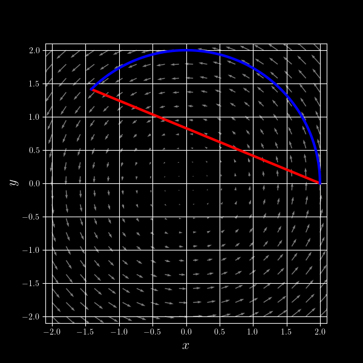

Drew Youngren dcy2@columbia.edu
Suppose the same mass $M$ were distributed evenly over the following regions in space:
Which has the greatest moment of inertia about its center?
Every integral has three essential parts, summarized as the where, the what, and the how.
\[ \int\limits_D F\,d\omega \]Let $C$ be the (1-dimensional) ring above object \[\iiint_C f\,dV = C\] for any $f$.
Assume a constant linear density of $\frac{M}{2\pi R} \frac{\text{unit of mass}}{\text{unit of length}}$.
\[ \int_C (\text{distance to axis})^2 \times (\text{linear density})\,d(\text{length}). \] This requires a new integral called a line integral or path integral.
A line integral, also called a path integral, is an integral whose domain of integration is $C$, the image of a curve parametrized by $\vec r(t)$.
They come in different "flavors" ...
Go to 3Demos → Story → Path Integrals for a demo of the flavors.
If $f$ is the height of a wall whose base runs along $\mathcal C$, then $\int_{\mathcal C} f\,ds$ would be the area of the wall.
N.B. Though $\int_C ds$ is always positive, $f$ could yield negative values, so $\int_C f\,ds$ can be negative.
These integrals are certainly more abstract. They are most often the building blocks of vector field integrals.
N.B. Orientation of path matters here. Reversing the direction negates the integral.
Let $C$ be the piece of the parabola $y=(x-1)^2$ from $(0,1)$ to $(3,4)$, and let $f(x,y) = x+y$.
Compare the line integrals: \[\int_C f\, dx, \int_C f\, dy, \text{ and } \int_C f\, ds \]
\[ \int_C f\,dx = \int_0^3 (1 + (t - 1)^2)\,dt = 7.5\]
\[ \int_C f\,dy = \int_0^3 (1 + (t - 1)^2) 2(t-1)\,dt = 16.5\]
\[ \int_C f\,ds = \int_0^3 (1 + (t - 1)^2)\sqrt{1 + 4(t-1)^2}\,dt \approx 20.1 \]
A vector field is simply a function \[ \vec F: \RR^n \to \RR^n. \]
We plot them by drawing arrows at regularly-spaces points in the domain. Here is:
\[\vec F(x,y) = \bv{\sin y \\ \cos x} \]$\int_C \vec F\cdot d\vec r$ measures how much a vector field $\vec F$ pushes along a path $C$.
$\int_C \vec F\cdot d\vec r$ measures how much a vector field $\vec F$ pushes along a path $C$.
Hooke's Law: force of a spring is proportional to displacement. $F = -k x$.
Compute the work done by spring moving an object from position $x_0$ to $x_1$.
A ball falls down a parabolic ramp $y=x^2$ from $(-2,4)$ to the origin. How much work was done by gravity?